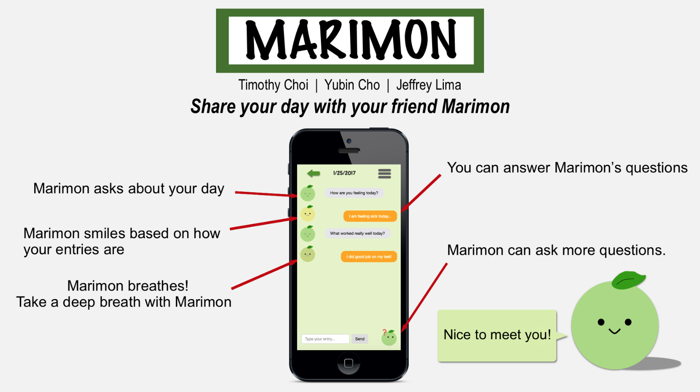
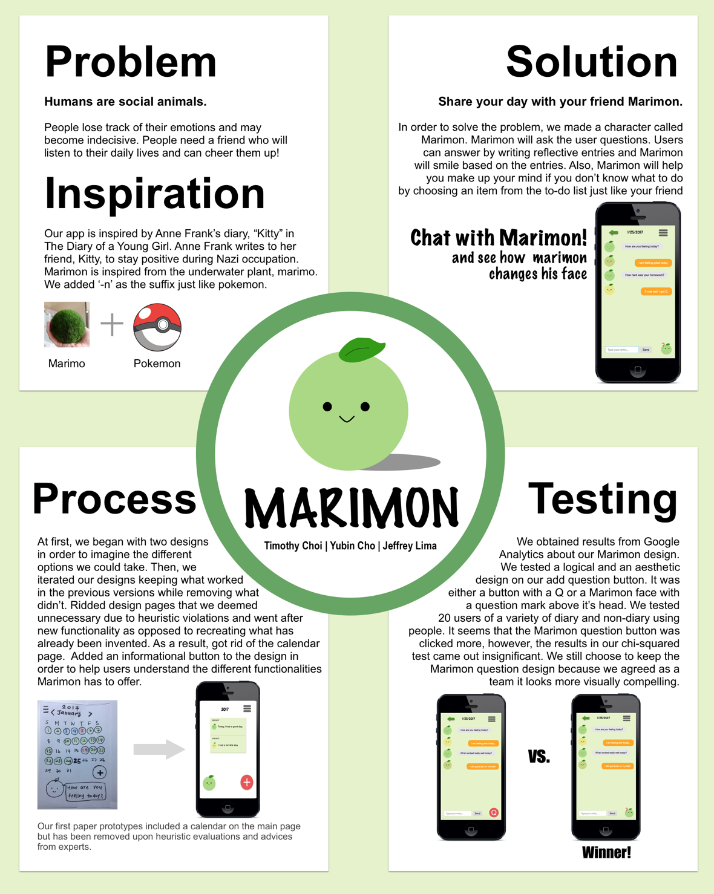

Marimon App
Role: UX/UI Designer & Developer
Tools: Sketch, HTML/CSS, Javascript, and GitHub
Introducing Marimon!
Marimon was desigend along with 2 others in a Human-Computer Interaction course at UC San Diego. In 9 weeks, our team did thorough user research, A/B testing using Google Analytics, wireframes, and prototypes to design an ideal solution to our problem.
Marimon is a diary application where it keeps a log of your happiness and is a friend who is always there for you. This app is inspired by Anne Frank's diary, "Kitty" in the Diary of a Young Girl. Anne Frank writes to her friend, Kitty, to stay positive during Nazi occupation.
I got inspired from Moss ball, the underwater plant, and Pokemon and created our cute friend, Marimon!
